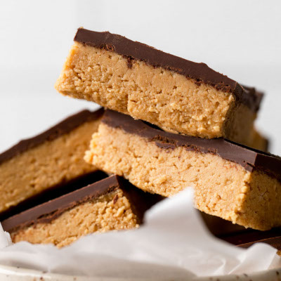

Back to the index
Peanut Butter Chocolate Bars

Description
It's peanut butter chocolate bars! With its amazing molecular design--
Ingredients
- 2 cups graham cracker crumbs
- 2 cups confectioners' sugar
- 1 cup butter or margarine, melted
- 1 cup peanut butter
- 4 tbsp butter
- 1 1/2 cups semisweet chocolate chips
Steps
- Mix graham cracker crumbs, confectioners' sugar, butter/margarine, and 1 cup peanut butter in a medium bowl until well-blended. Press evenly into the bottom of an ungreased pan.
- Place chocolate chips and 4 tablespoons peanut butter in a microwave-safe bowl. Microwave on high, stirring frequenty, until smooth. Spread mixture over crust.
- Refrigerate for 1 hour before cutting into squares.